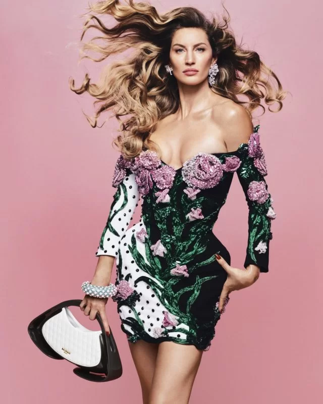
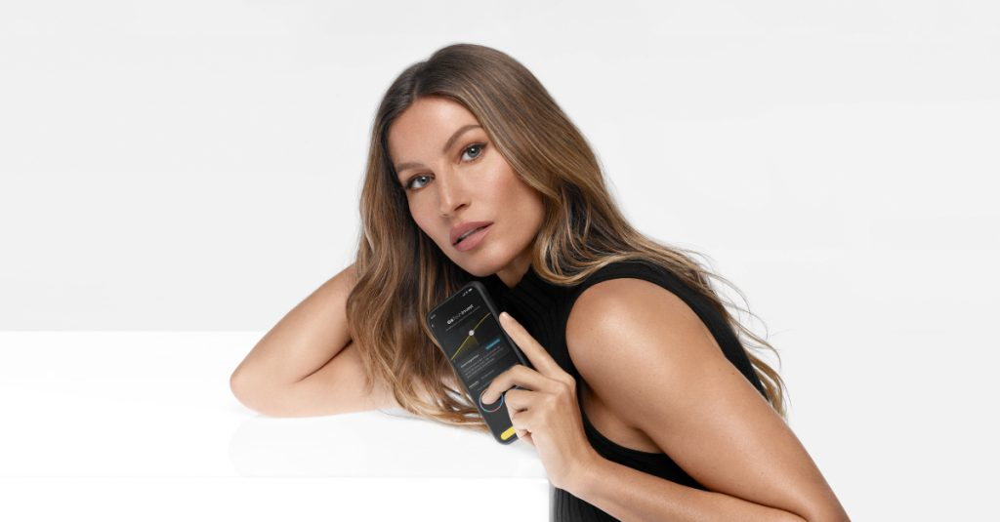

Gisele Bündchen volta a protagonizar uma coleção da Colcci. Foi com a marca que a brasileira conhecida como übermodel fez a sua despedida das passarelas, em 2015. Agora, Gisele é a estrela da nova linha premium da grife, chamada Iconic Jeans e, para promover a parceria, a marca investiu R$ 6 milhões em comunicação. O retorno da parceria também marca nova fase da empresa catarinense, que exporta seu denim, de fabricação 100% nacional, para mais de 22 países.
Novo rosto da Balmain Fotografada pelo brasileiro Rafael Pavarotti, a mais recente campanha da marca francesa Balmain é protagonizada por Gisele, que se inseriu em um jardim lúdico de flores e cores. A escolha da modelo para estrelar a ação foi certeira por misturar elegância com a tropicalidade do Brasil. Intitulada Uma Ode ao Amor, uma Ode aos Ícones, a campanha não poupou nas homenagens, tanto à modelo gaúcha quanto à própria Balmain, com a divulgação da bolsa JM Balmain. O nome é abreviação de Jolie Madame, como ficou conhecida silhueta criada pelo fundador, Pierre, em meados do século 20.
A modelo e empresária Gisele Bündchen protagoniza a nova campanha do C6 Bank sobre o C6 TechInvest, serviço de assessoria de investimentos do banco. No filme, a garota-propaganda fala como é prático e simples investir por meio do banco. Produzido pela Tech and Soul, o filme de 30 segundos mostra Gisele atendendo à chamada de uma amiga, enquanto explora o app do C6 Bank e conhece a plataforma de investimentos. A amiga, então, pergunta à Gisele se ela está falando com um consultor. Ao responder que não, a modelo enfatiza que, no C6 Bank, o cliente pode fazer tudo sozinho. “Nem precisa ser um especialista”, conclui Gisele no filme.